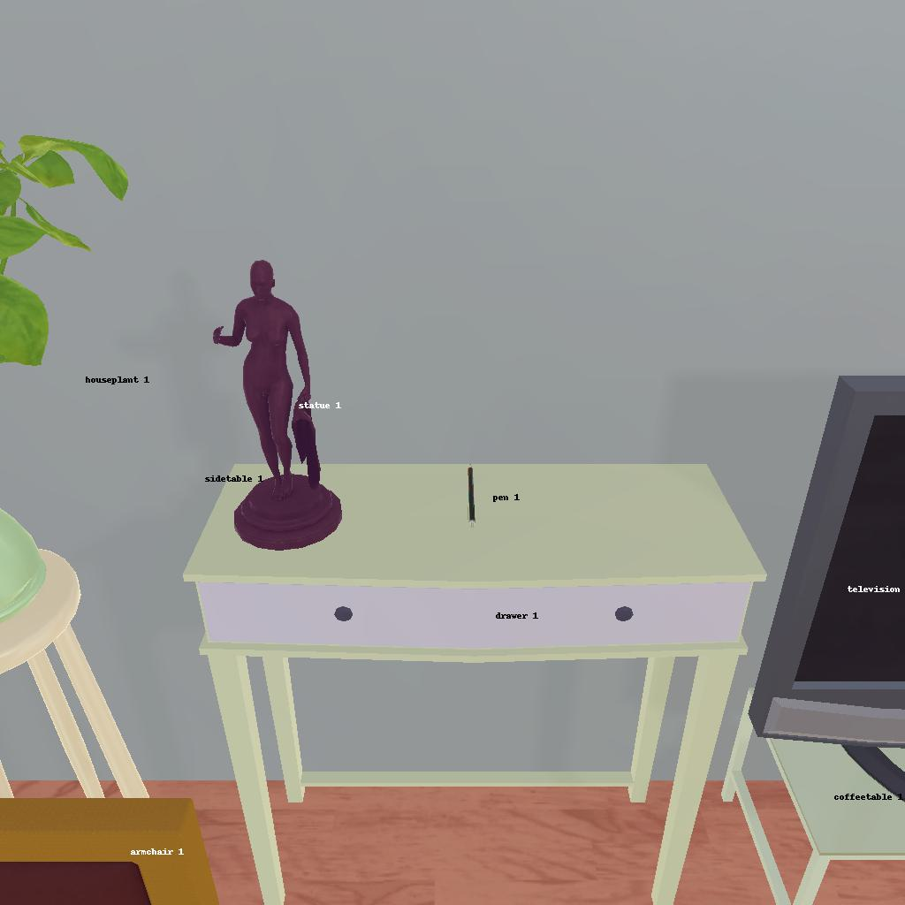

---------------------------------------------------------task: 4---------------------------------------------------------
--------------------------------------------------------------------------------------------------------------------------------------------------------------------
--------------------------------------------------------------------------------------------------------------------------------------------------------------------
Step:--------------------------------------------------------------------------3-------------------------------------------------------------------------------
----------------------------------------
VLM Prompt:
Image1:
Image2:
**Instruction**
1. Analyze the provided image to identify all visible household objects, focusing on those relevant to the task description "examine the statue with the floorlamp."
2. Use the analysis of the image and the task hint "The agent must find an object of the desired type, locate and turn on a light source with the desired object in-hand." to answer the question: what is the most reasonable action in the choices for the task description "examine the statue with the floorlamp"?
4. Decide and write the answer using the template: The answer is: (i): , where i is the real number. If there is no desired object in the image, search every place based on **Initial Observation** to find the object. And if no one is exactly correct, choose a similar answer.
**Initial Observation**
You are in the middle of a room. Looking quickly around you, you can see armchair (1), coffeetable (1-2), sidetable (1), garbagecan (1), drawer (1), sofa (1), diningtable (1)
**Answer Choices**
(1): go to armchair 1
(2): go to coffeetable 1
(3): go to garbagecan 1
(4): go to sofa 1
(5): go to coffeetable 2
(6): go to diningtable 1
(7): take statue 1 from sidetable 1
(8): take pen 1 from sidetable 1
(9): examine sidetable 1
**Answer**
Let's think step by step by following the instructions.
----------------------------------------
----------------------------------------
Original Response:
First, we identify visible household objects in the image. We can see a "sidetable 1" with a "statue 1" and a "pen 1" on it. These are the only objects visible in the image.
Next, we analyze the task description "examine the statue with the floorlamp." There is no floorlamp visible in the images provided. However, based on the initial observation, there are other household objects in the room, which may include a floorlamp.
The task hint suggests the agent must find an object of the desired type (in this case, the statue), locate and turn on a light source (potentially a floorlamp) with the desired object in-hand. Since the statue is the object we want to examine, and it's already located on the sidetable, the most reasonable action would be to take the statue first.
Considering the above analysis, the most reasonable action from the given choices for the task description "examine the statue with the floorlamp" is:
The answer is: (7): take statue 1 from sidetable 1
After taking the statue, the agent would need to search for a floorlamp to turn on and examine the statue, but this action is not listed in the provided choices.
----------------------------------------
----------------------------------------
>>> Refine Original VLM Response and Get Pure Action: take statue 1 from sidetable 1
After taking the statue, the agent would need to search for a floorlamp to turn on and examine the statue, but this action is not listed in the provided choices
----------------------------------------
-----------------------------------------------------------------
Running time: 12.372255325317383 seconds
Total Money: 1.7741600000000002
-----------------------------------------------------------------
-----------------------------------------------------------------
Text Observation:You pick up the statue 1 from the provided choices.
-----------------------------------------------------------------
UNSUCCEED